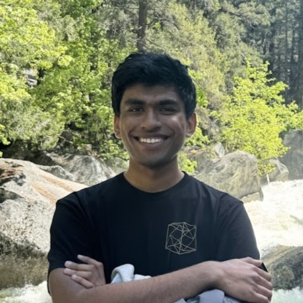

Hello! I'm Amit, a first year PhD student in the Theory group at MIT. I am supported by the Akamai Presidential Fellowship.
Before this, I did my undergrad at IIT Bombay, where I graduated with a BTech with honors in Computer Science and a minor in Mathematics.
You can contact me at:

- firstname_r[at]mit[dot]edu
- firstnamer[at]csail[dot]mit[dot]edu
- firstname.lastname[at]gmail[dot]com
You can also see more of my online presence here:
Here is a list of the courses I have taken/am taking.
Here is a link to my CV.